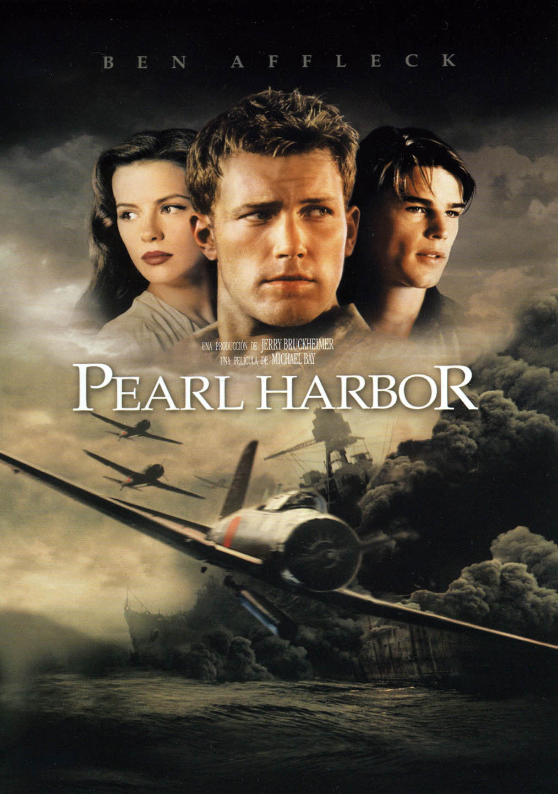
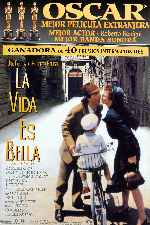
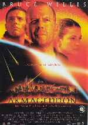

Lista de las 5 mejores películas
Grease
(10 votos)
 Pearl Harbour
(7 votos)
 La vida es bella
(5 votos)
El señor de los anillos. El retorno del rey
(4 votos)
 Armageddon
(3 votos)
Práctica realizada por Mª Victoria Montero Alcantara
 Grease (10 votos)
Grease (10 votos) El señor de los anillos. El retorno del rey (4 votos) Grease (10 votos) El señor de los anillos. El retorno del rey (4 votos)
El señor de los anillos. El retorno del rey (4 votos) Grease (10 votos) El señor de los anillos. El retorno del rey (4 votos)